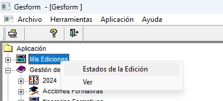
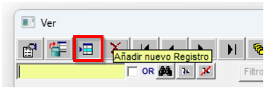
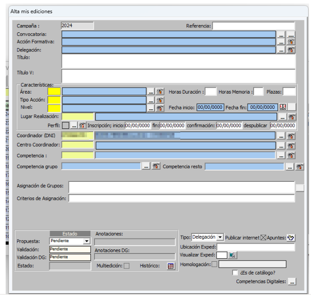
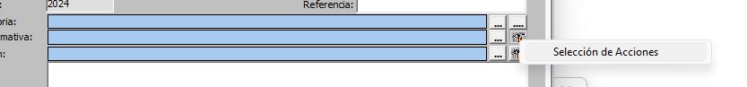
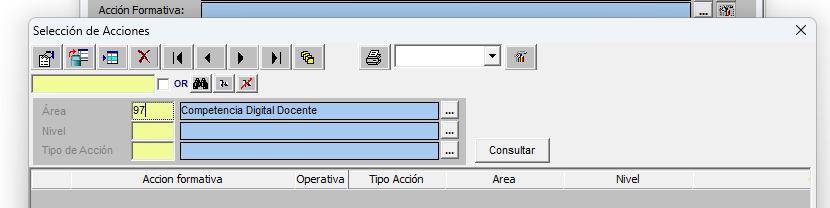
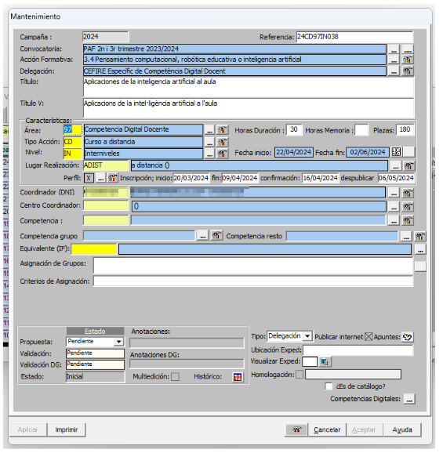

Crear una acció formativa nova
Qual volem crear una formació nova podem duplicar una semblant o crear una des de zero. Si comencem a crear l’edició des de cero cal:
Anar a Mis Ediciones – Ver

Anem al tercer icono Añadir nuevo Registro

Caldrà omplir la fitxa que apareix:

A continuació hi ha els diferents camps que cal omplir i una fitxa completa amb la informació.
Convocatoria - Cal escollir una convocatòria segons el tipus de formació que es vol realitzar:
FSE 2025 o FSE 2026
PAA + període en què es realitza la formació (per exemple: PAA Setembre-Desembre 2025)
AAPP (Administracions Públiques)
Acción Formativa - “Percha” - Mirar de les diferents perxes quina s’adapta més a la nostra formació.

Posem l’àrea corresponent i consultar

|
⚠️ IMPORTANT
|
|
⚠️ IMPORTANT
|
Delegación - CEFIRE Específic d'Intel·ligència Artifical i Pensament Computacional
Titulo / Título_VA (sense punts al final)
Área: NN – Horas i plazas (nombre de places que s’oferten)
Tipo de acción - CD (Curs a distància), C (Curso), etc...
Nivell – IN (si és internivell per exemple)
Lugar – ADIST – En el cas que siga 100% a distància
ADISTSINC – En el cas que siga 100% a distància però amb sessions síncrones
DIST-TEAMS - A distància amb sessions síncrones per Teams
....
ADIST<20 y C<20 -> NO EXISTE Y NO SE PUEDE PONER EN BASE A ORDEN 65
Fecha inicio y fin de la formació
Dates inscripción inicio i fin, confirmación (final), despublicar (dos setmanes després de començar)

|
⚠️ IMPORTANT Basant-se en les dates d'inscripció inici i fi... es recomana que com a mínim hi haja:
|
A continuació Aplicar per tal que aparega marcat la X en perfil i tinguem el codi de referència.
|
⚠️ IMPORTANT Este pas és extremadament important, cal vore una X en el perfil, si no apareix la X i modifiques alguna cosa estaràs modificant totes les formacions del CEFIRE que "perxen" d'eixa formació i crearàs un desastre monumental. |